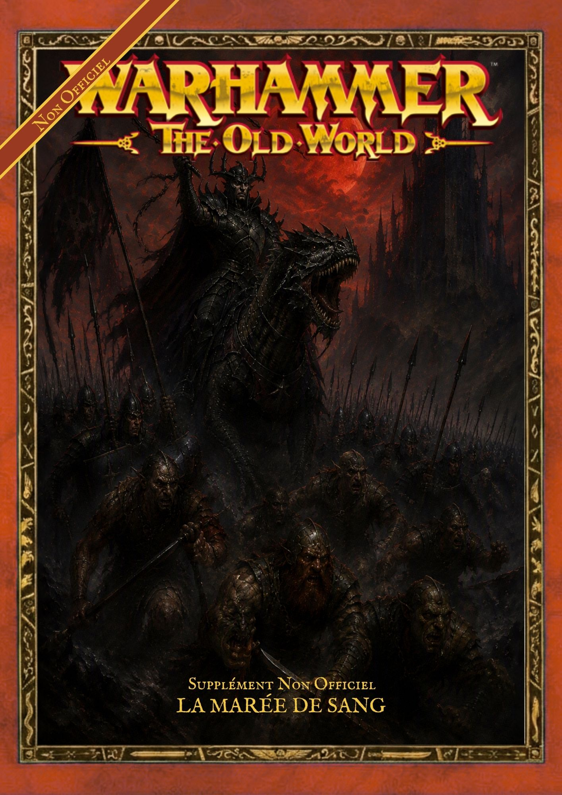
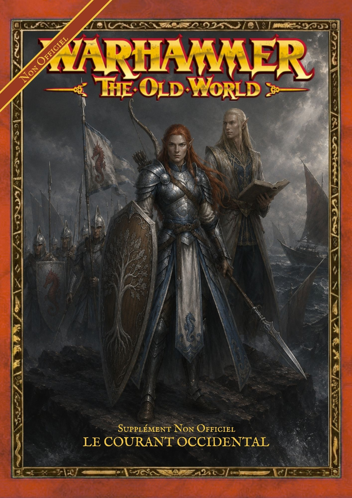
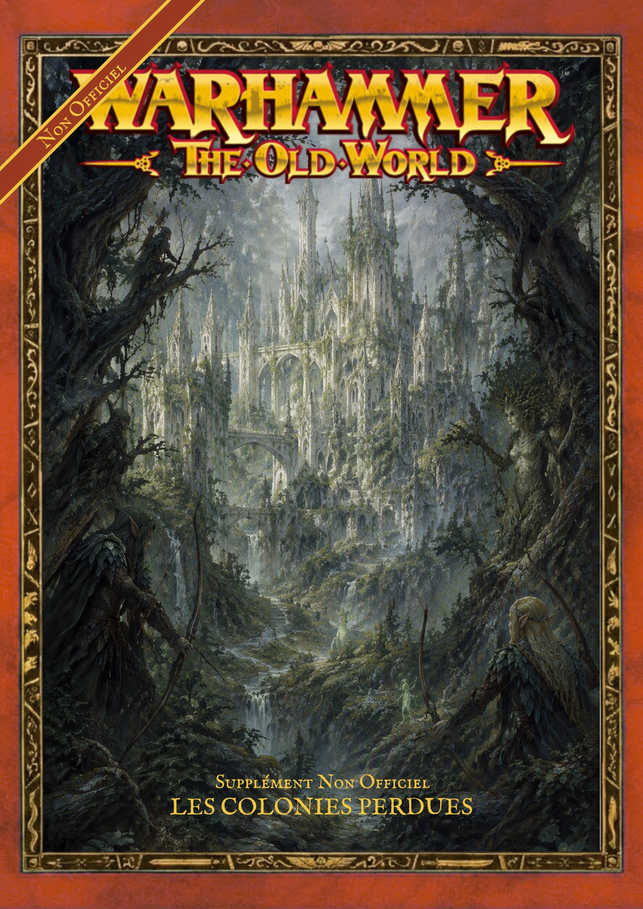

La Marée de Sang
Campagne narrative consacrée aux flottes Druchii, à leurs poursuivants et aux batailles qui se déroulent sur les côtes de l'Ancien Monde.
TéléchargerSuppléments • Campagnes • Cartes • Figurines
La Marée de Sang Une campagne maritime fan-made pour Warhammer: The Old World. Deux flottes. Une mer hostile. Une chasse qui ne peut se terminer que par la destruction ou la fuite.
Télécharger le supplément
Campagne narrative consacrée aux flottes Druchii, à leurs poursuivants et aux batailles qui se déroulent sur les côtes de l'Ancien Monde.
Télécharger
Supplément consacré à une cité maritime des Hauts-Elfes et aux événements qui entourent le Courant Occidental.
Télécharger
Le retour des Hauts-Elfes sur les anciennes terres elfiques, désormais englouties sous des forêts hostiles.
Bientôt disponibleCartes maritimes, courants océaniques, routes, ports, forteresses et territoires explorés par les flottes.
Voir la carte complèteFigurines, concepts, unités et projets destinés à accompagner les suppléments.